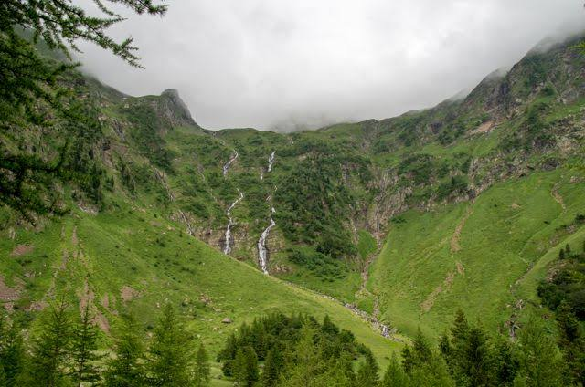

Cirque
de la Glère


⟹ Le Cirque Secret du Luchonnais ⟸
Plus discret que le lac d'Oô voisin, le cirque de la Glère se niche dans la vallée de la Pique, au-dessus de l'Hospice de France, à la porte des grandes traversées pyrénéennes vers l'Espagne. Son nom vient du torrent qui dévale ce petit cirque glaciaire, le ruisseau de la Glère.

L'un des sentiers qui y mènent, le célèbre « chemin de l'Impératrice », doit son nom à l'impératrice Eugénie de Montijo, épouse de Napoléon III, qui séjournait régulièrement à Luchon au XIXᵉ siècle et affectionnait particulièrement les promenades vers l'Hospice de France. Le tracé, en balcon dans la forêt de Sajust, garde depuis ce nom empreint d'élégance thermale.
Avant d'atteindre le cirque proprement dit, le sentier franchit le gouffre de Malaplate, une impressionnante entaille rocheuse où le torrent de la Glère se fraie un passage souterrain — l'un des passages les plus spectaculaires de la randonnée.
Aujourd'hui classé en réserve biologique, le site a conservé tout son caractère sauvage : peu aménagé, silencieux, il contraste avec la fréquentation plus importante du lac d'Oô voisin.
Comptez environ 3h30 aller-retour, pauses comprises, pour une randonnée sans réelle difficulté technique, mais où certains passages restent étroits et parfois impressionnants au-dessus du vide.
Deux départs sont possibles : depuis la maison forestière de Jouéou, sur la route de l'Hospice de France, ou directement depuis l'Hospice de France lui-même, via le chemin de l'Impératrice.
Attention, le vent peut souffler fort dans le cirque : mieux vaut prévoir une protection supplémentaire, même en été. La route d'accès est par ailleurs fermée de fin novembre à mi-avril, rendant le sentier inaccessible en hiver.
Réserve biologique : le cirque de la Glère est intégré à une réserve biologique où les chiens sont strictement interdits, y compris tenus en laisse.
Présence de patous : des chiens de protection veillent sur les troupeaux en estive ; il convient de garder ses distances et de ne jamais s'interposer.
Faune sensible : isards et marmottes fréquentent les pentes du mail d'Auéran ; l'observation doit se faire à bonne distance, sans les déranger.
Fréquentation maîtrisée : moins connu que le lac d'Oô, le site conserve un calme relatif qu'il s'agit de préserver en respectant le balisage.
Le cirque de la Glère se situe dans la vallée de la Pique, sur la commune de Bagnères-de-Luchon, en amont de l'Hospice de France.
Depuis Luchon, suivre la route de l'Hospice de France (D125) jusqu'à la maison forestière de Jouéou ou jusqu'au terminus de la route, à l'Hospice de France.
L'Hospice de France, ancien lieu d'accueil des pèlerins et voyageurs, constitue aujourd'hui la porte d'entrée vers le cirque, mais aussi vers le port de Vénasque et la frontière espagnole.
Au-delà du cirque, les randonneurs expérimentés peuvent poursuivre vers d'autres ports et sommets du massif, carte topographique indispensable.